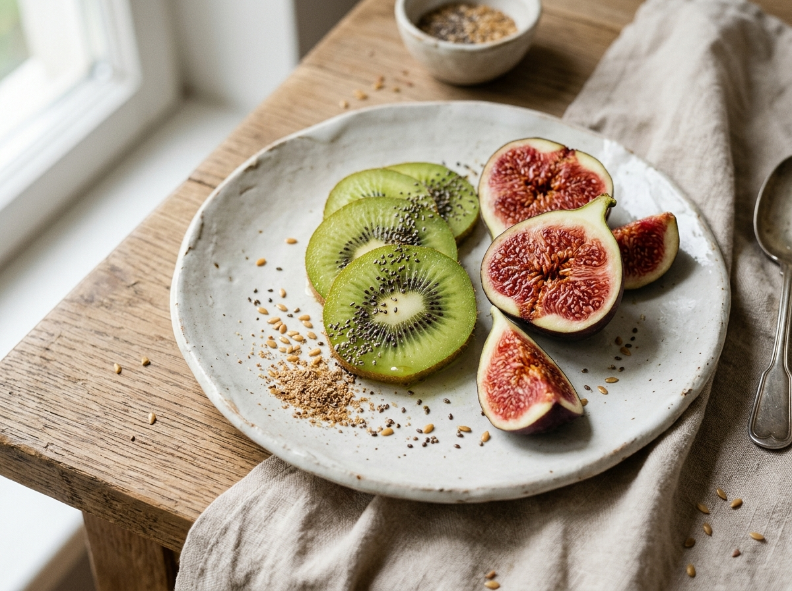
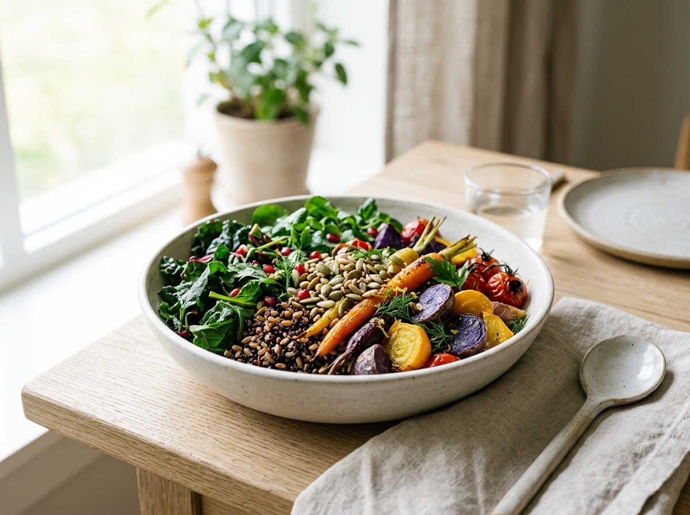

Microbiota & Barreira

Modulação Intestinal
Estratégias nutricionais para equilíbrio da microbiota, integridade da barreira intestinal e alívio de sintomas como distensão e desconforto.
Sou Lorena Charife, nutricionista mestre em Ciências da Saúde e especialista em Gastroenterologia. Acompanho você de forma individualizada na modulação intestinal e no manejo de intolerâncias alimentares, construindo bem-estar digestivo duradouro.
Acredito que o cuidado nutricional precisa respeitar a sua história clínica, seus hábitos culturais e a sua rotina real — longe de regras engessadas ou restrições sem critério diagnóstico.
Minha trajetória acadêmica e hospitalar me permite investigar a raiz dos desconfortos gastrointestinais e conduzir condutas nutricionais seguras, integrando saúde intestinal, equilíbrio metabólico e autonomia alimentar.
Condutas individualizadas baseadas em evidências científicas para o cuidado gastrointestinal e clínico.

Estratégias nutricionais para equilíbrio da microbiota, integridade da barreira intestinal e alívio de sintomas como distensão e desconforto.
Acompanhamento estruturado em etapas para supercrescimento bacteriano no intestino delgado, alinhado à conduta médica e reintrodução segura.
Condução técnica para intolerância à lactose, frutose e histamina, aplicando o protocolo Low FODMAP com fases de exclusão, teste e personalização.
Cuidado nutricional integrado para constipação intestinal, síndrome do intestino irritável e sintomas digestivos modulados pelo estresse e rotina.
Suporte nutricional clínico no manejo de condições gastrointestinais, metabólicas e inflamatórias, priorizando qualidade de vida e segurança alimentar.

Acompanhamento para melhora da composição corporal e vitalidade com planejamento alimentar possível, sem terrorismo nutricional ou restrições extremas.
Na primeira consulta realizamos uma escuta detalhada do seu histórico clínico, hábitos alimentares, rotina e exames laboratoriais para estruturar um plano alimentar individualizado.
Acompanhamento humanizado pautado na escuta ética e na evidência clínica. Depoimentos espontâneos e verificados registrados no perfil profissional da Dra. Lorena Charife no Google.
Compromisso com o rigor acadêmico, formação continuada de profissionais de saúde e produção científica em Gastroenterologia e Nutrição Clínica.
Se você já tiver exames recentes (dos últimos 6 meses) ou laudos gastrointestinais, traga-os para analisarmos juntos. Caso não tenha, avaliamos a sua história clínica na consulta e solicitamos apenas os exames realmente necessários.
A teleconsulta ocorre por videochamada em horário agendado, com a mesma duração e profundidade da consulta presencial. Você recebe todo o material, orientações e plano alimentar em formato digital organizado.
Não. O protocolo Low FODMAP é uma ferramenta diagnóstica e terapêutica temporária, dividida em fases. O objetivo clínico é justamente identificar suas tolerâncias individuais para ampliar ao máximo a variedade da sua alimentação com segurança.
Os atendimentos são particulares para garantir o tempo necessário de escuta e personalização de cada conduta. Emitimos recibo/nota fiscal para que você possa solicitar reembolso junto ao seu plano de saúde, conforme as regras da sua operadora.